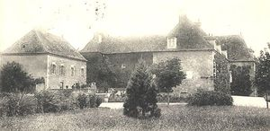
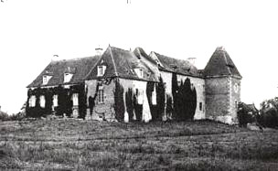
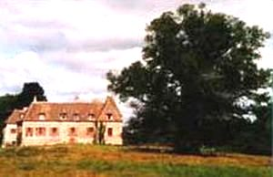
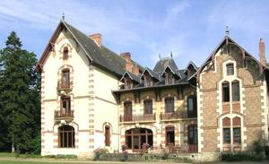
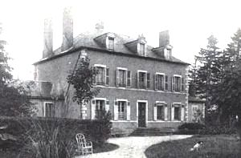
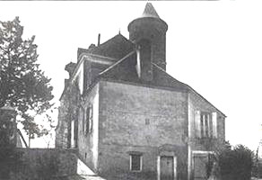

Recensement Jean-Claude Truffet
| Département | 03 — Allier |
| Canton | Chevagnes |
| Commune | Theil-sur-Ascolin |
| Type d'édifice | Château |
| Période d'origine | XV-XIX |






Trois châteaux à Theil sur Ascolin de la Fin du XVe siècle de la Pierre du XIXe siècle et de la Varenne du XIXe siècle. FIN, la seigneurie appartenait en partie, en 1343, à Pierre Calbrun, chevalier, conseiller du duc de Bourbon. En 1435, Jean de Bertine, issu des seigneurs de La Fin, laissa la seigneurie à sa fille Alix, qui l'abandonna à Jean Mareschal, écuyer, seigneur de Fourchaud et des Noix. La motte de La Fin-Rabotin fut la plus importante et une famille de chevaliers s'y installa dès le XIIIe siècle, mais elle n'avait conservé qu'une partie du domaine et vivait le plus souvent dans son château de Beauvoir ou à Cindré. En 1503 damoiselle Loyse de La Fin, veuve de Jehan d'Isserpens, écuyer, seigneur de Vaumas, fait aveu d'un fief très éclaté comprenant le tiers de la "mothe aux Fourniers", les domaines des hôtels de Chambort et de Vaumas et plusieurs autres revenus. A sa mort, la seigneurie échoua à son fils Jean, chanoine de Lyon et à sa fille Madeleine. Vers 1523, Pierre Mareschal, écuyer, fils de Jean, seigneur de La Fin-Fourchaud, regroupa les deux terres de Fourchaud et de Rabotin. Au début du XVIe siècle, Louis de Montalban poursuivit l'oeuvre et laissa son fils Regnaud, un fief qui avait regroupé les droits seigneuriaux de La Fin. Au début du XVIIIe siècle la famille de Champfeu transmet à l'écuyer Michel de la Barre, dont les descendants étaient encore propriétaires à la veille de la Révolution.
LA PIERRE, élégant château du XIXe siècle a été réalisé en 1880 par l'architecte Jean Moreau qui établit les plans de l'édifice. Propriété de la famille du comte de la Roche jusqu'en 1939, le domaine devint alors un rendez-vous de chasse. VARENNE, la maison forte existait à la fin du XVe siècle, puisque le seigneur de Thiel, Lancelot de la Varenne, écuyer, en fait aveu en 1503 à la duchesse de Bourbon, il tient du fief de Châtel Perron sa maison forte de la Varenne.
Fin , les maisons seigneuriales abandonnées depuis longtemps furent, au XIXe siècle, remplacées par un château moderne, ou l'alternance de la brique rose et de la pierre blanche souligne angles et encadrements. Le corps de logis de plan rectangulaire à deux niveaux et niveau de comble, reçoit sur les angles deux pavillons carrés dissymétriques en retour d'équerre. Le plus important, à quatre niveaux, écrase par son volume l'ensemble de la construction. Le second, plus petit, à 3 niveaux, pris en oeuvre, forme avant-corps. L'autre façade, côté jardin reçoit elle aussi un pavillon de plan carré. La Pierre, après la guerre, le château fût restauré, le parc dessiné et planté par le paysagiste François Treyve. Aujourd'hui, les propriétaires de ce beau domaine ouvrent leur demeure et proposent 5 chambres chaleureuses. Varenne, porte encore aujourd'hui le nom de château, mais il s'agit plutôt d'une gentilhommière, construite au XIXe siècle qui a remplacé le château ou plus exactement la maison forte primitive. Il subsiste cependant un logis dans les communs, une grange du XVe siècle, à pans de bois et motifs à écharpes.
Famille de Pierre Mareschal Famille du comte de la Roche "
Château de la Fin , de la Pierre et de Varenne à le Theil sur Ascolin